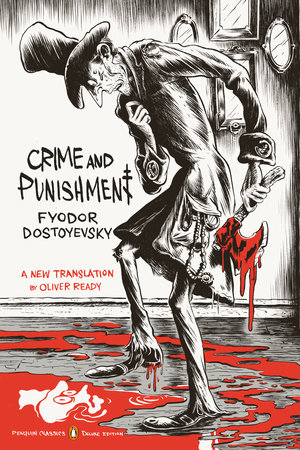

<!---RMIT University Vietnam
  Course: COSC2430 Web Programming
  Semester: 2023
  Assessment: Assignment 1 - Static Website
  Author: Pham Minh Quang
  ID: S3978814
  Acknowledgement: Book Detail Page--->
<!DOCTYPE html>
<html>
<head>
    <title>Book Details Page</title>
    <meta name="viewport" content="width=device-width, initial-scale=1">
</head>
</html>
<meta name="viewport" content="width=device-width, initial-scale=1">
  <link rel="stylesheet" type="text/css" href="booksdetail.css">
  <link rel="stylesheet" href="https://cdn.jsdelivr.net/npm/@fortawesome/fontawesome-free@6.2.1/css/fontawesome.min.css">

</head>
<body>
    <section class="header">
        <nav>
            <a href="index.html">
            </a>
            <div class="nav-links" id="navLinks">
                <i class="fa-solid fa-x" onclick="hideMenu()"></i>
                <ul>
                    <li><a href="index.html">HOME</a></li>
                    <li><a href="best.html">BESTSELLERS</a></li>
                    <li><a href="philoshophy.html">PHILOSOPHY</a></li>
                    <li><a href="neuroscience.html">NEUROSCIENCE</a></li>
                    <li><a href="contact.html">CONTACT</a></li>
                </ul>
                
            </div>
            <i class="fa-solid fa-x" onclick="showMenu()"></i>
        </nav>
        </section>
        <!---JavaScript--->
<script>
            var navLinks = document.getElementById("navLinks");
            function showMenu(){
                navLinks.style.right = "0";
            }
            function hideMenu(){
                navLinks.style.right = "-200px";
            }
</script>
<section class="det">
    <h2><a href="index.html">Home</a> > <a href="best.html">Bestsellers</a> > Crime and Punishment</h2>
    <div class="desc">
        <div class="imga">
            
        </div>
        <div class="timg">
            
            
            
            
        </div>
        
       
        
    </div>
    <div class="money">
        <h1>$20</h1>
    </div>
    <button class="button">Purchase</button>
    <h1>Crime and Punishment</h1>
    <p>Raskolnikov, a destitute and desperate former student, wanders through the slums of St Petersburg and commits a random murder
         without remorse or regret. He imagines himself to be a great man, a Napoleon: acting for a higher purpose beyond conventional
          moral law. But as he embarks on a dangerous game of cat and mouse with a suspicious police investigator, Raskolnikov is
           pursued by the growing voice of his conscience and finds the noose of his own guilt tightening around his neck. Only Sonya,
            a downtrodden sex worker, can offer the chance of redemption.</p>
    <p>Dostoevsky's letter to Katkov reveals his immediate inspiration, to which he remained faithful even after his original 
        plan evolved into a much more ambitious creation: a desire to counteract what he regarded as nefarious consequences arising 
        from the doctrines of Russian nihilism. In the novel, Dostoevsky pinpointed the dangers of both utilitarianism and 
        rationalism, the main ideas of which inspired the radicals, continuing a fierce criticism he had already started with his 
        Notes from Underground. Dostoevsky utilized the characters, dialogue and narrative in Crime and Punishment to articulate 
        an argument against Westernizing ideas. He thus attacked a peculiar Russian blend of French utopian socialism and Benthamite 
        utilitarianism, which had developed under revolutionary thinkers such as Nikolai Chernyshevsky and became known as rational egoism.
         The radicals refused to recognize themselves in the novel's pages, since Dostoevsky pursued nihilistic ideas to their most
          extreme consequences. Dimitri Pisarev ridiculed the notion that Raskolnikov's ideas could be identified with those of the 
          radicals of the time. The radicals' aims were altruistic and humanitarian, but they were to be achieved by relying on reason and 
          suppressing the spontaneous outflow of Christian compassion. Chernyshevsky's utilitarian ethic proposed that thought and will 
          in Man were subject to the laws of physical science.[28] Dostoevsky believed that such ideas limited man to a product of physics,
           chemistry and biology, negating spontaneous emotional responses. In its latest variety, Russian nihilism encouraged the creation 
           of an élite of superior individuals to whom the hopes of the future were to be entrusted
    </p>
    
    <br>
</section>

</body>
<footer>
    <nav>
        
        <div class="footer-nav-links">
    
            <a href="about.html">ABOUT US</a>
            <a href="privacy.html">PRIVACY POLICY</a>
            <a href="terms.html">TERMS OF USE</a>
            <a href="contact.html">CONTACT US</a>
            
        </div>
    </nav>

</footer>
</html>